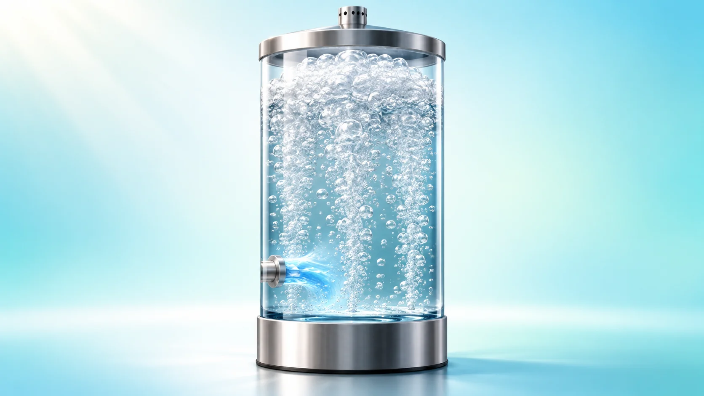
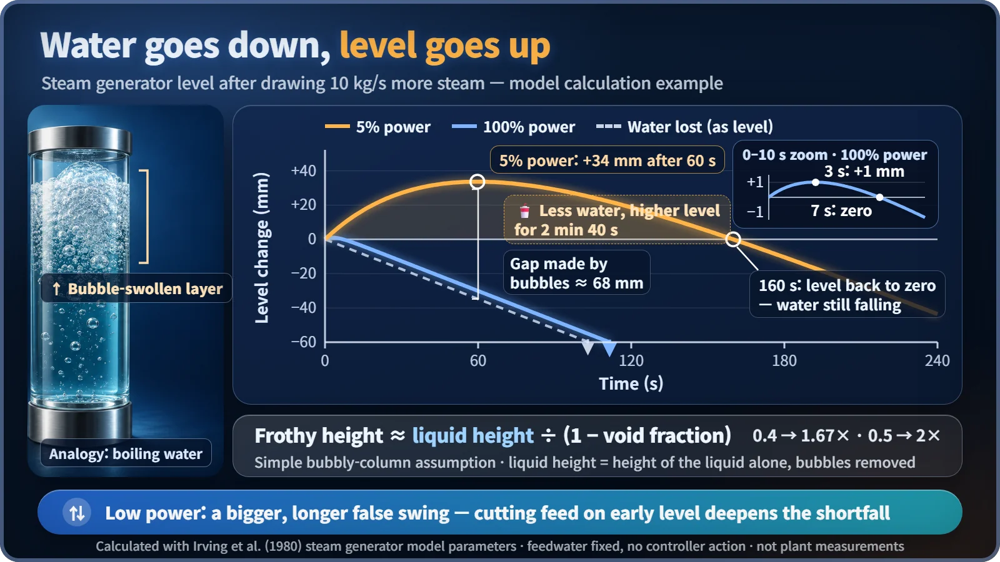
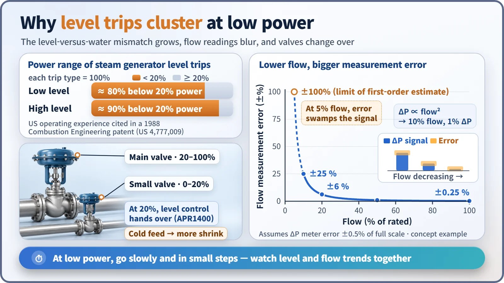

Plant Operation, Control & the Grid · 245
A Level That Fizzes Up Like an Opened Soda — Why Feedwater Control Is So Tricky
Boiling water swells with bubbles, so level is not the amount of water. At low power the misleading swing grows tens of times larger, flow readings blur and valves change over.

In a steam generator the water is boiling, so its level is not the same as its amount. Draw more steam and the level first rises (swell) even as water is lost; add cold feedwater and it first drops (shrink). This backwards response is far larger and slower at low power, where flow readings also blur and valves change over, which is why level trips once clustered below 20% power. [1]
A 30-second soda experiment
Shake a bottle of sparkling water once, then slowly twist the cap. With a hiss, bubbles surge up and foam fills the neck. You didn't add a drop, yet the level went up; if anything there's less water now, by however much foam spilled out. Those 30 seconds hold a problem nuclear plant operators have wrestled with for a long time: why feedwater control is so hard.
Isn't it just keeping the level right?
A pressurized water reactor's steam generator boils water outside bundles of thin tubes carrying reactor-heated water. Whatever leaves as steam must be replaced with feedwater; feedwater control matches water in to steam out, holding the level within a set range. That sounds as easy as topping up a fish tank. The catch is that the water is boiling.
Foam is not water
The fraction of a boiling mixture's volume taken up by bubbles is the void fraction. Bubbles weigh almost nothing but take up space:
Height with bubbles ≈ height of the water alone ÷ (1 − void fraction)
A void fraction of 0.4 swells the water to 1.67 times its height; 0.5 makes it twice as tall. The level instrument reads that swelling too, so level is not the same thing as the amount of water.
When the turbine draws more steam, pressure in the vessel dips and the water boils harder, just like opening the soda. Soda bubbles are dissolved carbon dioxide and steam generator bubbles are water vapor, but in both a pressure drop makes bubbles grow. The mixture swells and the level rises while the water is actually falling: swell. Draw less steam or add a rush of cold feedwater and bubbles collapse, so the level drops first while the water is rising: shrink. Neither is an instrument fault. [1]
Backwards at first, right only later
A response that first moves the wrong way is an inverse response. A controller watching only level sees the swell, decides the water is about to overflow and cuts feedwater, while the water is really running short. When the bubble effect subsides, the real shortfall appears and the level plunges.

The size of the effect depends on power. With a widely used research model based on a French pressurized water reactor steam generator (the Irving model), drawing the same extra steam at rated power lifts the level a little over 1 mm for about 3 seconds before it turns the right way after 7 seconds. At 5% power the level rises by as much as 34 mm over about a minute and takes 2 minutes 40 seconds to come back. At low power the misleading swing is tens of times larger and lasts tens of times longer. [2] [3]
Low power is a triple headache
The flowmeters go blurry. Flows are measured from the pressure difference across a narrowed pipe section, proportional to the square of the flow, so at 10% flow the pressure difference is only 1%. Assuming an instrument error of 0.5% of full range, a 0.25% flow error at rated flow balloons to 25% at 10% flow. [4]
The valves change over. Plants feed through a small valve at low power and a large one as power rises. In South Korea's APR1400, once power passes 20% the job of controlling level passes from the small valve to the large one; at some US plants, operators worked a bypass valve by hand below 20%. Hand-overs are prone to wobble. [5]
The feedwater is cold. With little steam available to preheat it at low power, cold water goes in and collapses more bubbles, making shrink worse.
That's why trips piled up in this range. A patent document summarizing 1980s US operating experience states that about 80% of steam generator low-level trips and about 90% of high-level trips happened below 20% power. In 1985, at one US plant during startup at 10% power, a dump valve returning steam to the condenser opened quickly, the level swung widely, and the reactor tripped automatically on low level; the record also cites operators responding with control rods and auxiliary feedwater at the same time without coordinating. [6] [7]

A reactor stopping because the level went too low or too high is the protection system working as designed. The issue is less added danger than the burden of restarting a healthy plant.
The one who doesn't rush wins
The trick is to put time on your side. The controller deliberately takes in the level signal a little late: early in a transient it moves the valve on the difference between flow in and flow out, and only after the bubble effect fades does level take the lead. One Westinghouse-type design set the time for accumulating and acting on level error at about two minutes. [1]
At low power, operators change feedwater slowly and in small steps, anticipate the swell before drawing more steam, and don't chase a jumping level; they watch flow and trend together, a feel built through simulator training. Designs also leave margin so shrink and swell don't reach the trip setpoints.
Next time you open a soda, watch the foam climb. That height is not the amount of water. Remembering that, every moment, inside a giant steam generator is feedwater control.